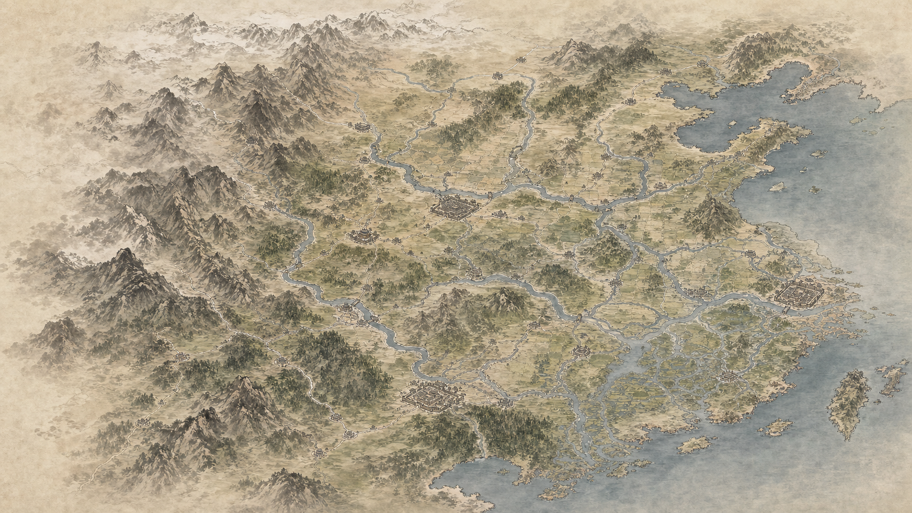

major river review corridor
mountain/pass belt
road/pass review corridor
key city anchor zone
Purpose: Stage 1 low-resolution review overlay. It checks broad art grammar and Tier A/B geography intent, not final data coordinates.
Author pre-review: v1 is visually useful for national art direction, but not geography PASS. Overall coastline/river/city placement still needs producer review and likely tighter control.
Runtime: none. This file and image stay in docs/map_design only.